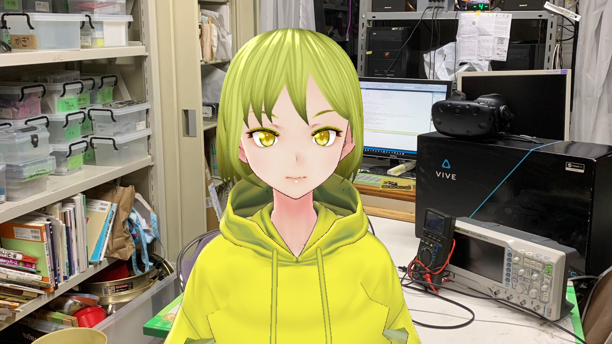
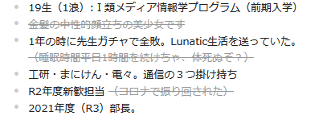

Lunatic電通生もっちゃんの部屋
21年度部長になってやったこと Part.1
Part.1 は、2021年2月～2021年12月までの内容となっています。2021年12月～2022年3月？までの内容はPart.2が生えるまでお待ちください。
この記事は、 UEC koken Advent Calender の記事です。相変わらず過疎っていますが、 こっちやこっちで工研生が活躍しているので、許してください。
さて、前回の記事は、りんりんさんの 部室の鍵をICであけられるようにした話 です。長年の工研鍵Felica対応のバトンがようやくゴールに運ばれましたね。すごいや!
このページのCSSダサすぎ問題は、永遠の未解決問題ということにしておいて、今回は、Advent参加初めてのお狐さんが、部長になって致死量のタスクを浴びながら、生活するというお話です。成仏してくれメンス…。
2021年1月~3月
１月に部長選挙が行われ、事実上の承認選挙となり部長に選出されました。昨年度新歓担当だったこともあり、来年度の新歓は対面でできるかなあ…などと考えている2月に…。
この時、kokenWikiに関する喧嘩（？）もとい、運用指針の食い違いが起こり、もともとの設計思想よりOBにも広く公開するという立場と、新たな設計思想であるアカウント制により部員のみ閲覧可にする立場に別れました。たまたまその火種が発生したタイミングのDiscordに立ち合ってしまい、半ば仲介として行うことに。この騒動は、２月に臨時部会をひらくまで長引き、結論としては、僅差で前者のOBにも広く公開するという立場に落ち着いた。ただし、ここでさまざまな条件が付け加えられたため、整備することとなる。
３月始め、Wiki内のディレクトリ大清掃大会が行われた。これは過去のWikiと今のWikiの運用設計が異なることによる変更で、ほぼすべてのページのカテゴリを変更した。8人がかりで行い、一部やらかした（GCPの1ファイルあたりの上限32MBを知らずに一部失われた…）が、なんとか再編することができた。

その後は、4月に新入生を迎え入れられるように、いろいろと準備をした。入部届だったり、後援会援助金の申請をだしたり、引継ぎの資料をつくったり、課外に提出する資料をつくったり……で、ここでまあいろいろと謎がでてくるわねえｗ なんで借用リストのうち７割ないんですかね？？？どうしようかなあ。
2021年4月-6月
まず、新入生を迎える前に、SlackとDiscordの運用指針についてまとめた。これは、Wikiだけセキュリティを強くしても、肝心のSlackがガバガバだったことに由来する。こちらについては、臨時部会を開いて調整が完了した。（これが12月現在になっても実行できていないんですよね…）
あと、部室汚すぎ案件。とりあえず、いらないものを「東34号館」の物置に移動させないとね…（後のフラグ）

まあ、まだオンライン部会しか開けてないけど、部室は使えるし、まあちょっと大変だけど１年生に加えて２年生も入ってくれて大盛況だなあ!!!!!
緊急事態宣言! 部室閉鎖!!
……はい？またですか？？？いい加減にしてください! と言いたかったんですけど、こればっかりは仕方がないので、従うことに。せっかく企画してた対面イベントも、秋葉原講習も全部パーに。うーーん。
ハード講習もソフト講習も何とか実行できて、よかったなあ。部室が開けば…
再開活動計画書を提出し、受理されて部室が再び使えるようになったのは、6月中旬。これまで長かったですね……。また感染症対策を徹底しなければなりませんが、 とりあえず活動できることに乾杯としましょう。（お酒は飲んでいません）

実はこの時（6月）、同時並行で、大学施設の「ピクトラボ」から、技術系サークルに対してお試しで使ってみるかというお話を打診された。ものつくりセンターは平日9時17時の利用ですし、ちょっと利用しずらいということもあり、この話に乗ってみることに。裏でお話をあわせることに。（これ以降はSNSなどへの掲載を禁止されているので、ここらへんで…。）
ついでに、工研コンテストの連絡も行った。
2021年7月
事の発端は3日のサークル棟清掃。この時に「東34号館が使えなくなるよ～」的な噂を聞いたが、いつだかは未定だということ。まあ、ゆとりはあるだろうし、計画でもたてるか…。
とはならず、すぐに他のサークルに退避命令がくる。が、工研には来ていない…？？？ 念のため課外に尋ねたところ、9日に返信がきた。
「東35-xxx号館に移動してください。下見してね！」
はい？ま、まああとで課外に行くか…。
9日には、3月にできた規約の改正（不備の修正）を行い、その後、工研所有の銀行口座の引継ぎを行った。（これもいろいろあったが、まあね。）そして、9日同日には、緊急事態宣言がまたでるということで、どうしよう！！！と思っていたが、なんと今回は部室は閉鎖にはならないということ。うれしいがしかし、かなり人数を絞って部室を運用することにした。
11日には、技術書典オフラインがあり、レニウムさんと参加することに。池袋遠征です。楽しかった。やっぱり、対面での同人イベントは楽しい！

12日週に課外に凸していろいろ確認。まず、東35は狭いということ、この物置はこのさき用意できるかわからないからいろいろ捨ててほしい。東36の旋盤は底が抜けるぜ。処分してくれ。7月中にね。
無理ですが？？？？？オリンピック休みがあるとはいえ、捨てる場所が空いているのは「木曜日14時から15時まで」。おいおい、4月に退避させたやつとかすてなあかんやん！ふぁーーーー。日程もう選んでられないやん！

この後は大忙し。16日に東36号館の下見、16日金曜の部会（その次からオリンピック休みなので、通常部会最後）までに計画を剛速球で用意。ねむろさんの力もかりながら、なんとかものつくりセンターに旋盤を返すことが決定。 ピクトラボの見学等も調整を行い、7/29ピンポイントで行うことに。
来てくれた部員のかたにめちゃくちゃ感謝をしながら、29日に旋盤の移動と東34のお引越しを行った。13時から初めて、なんやかんや18時くらいまでかかったんかな？ものすてと大部分の移動を終わらせた。
東36号館、ミッションコンプリート
このタイミングでいろいろなものを捨てた判定にして、借用リストを更新したのは内緒の話です。
あれ、7月の援助金の話きてたんかーい。もらっとこ。
あ、ピクトラボ利用開始です。
2021年8月~9月
まあ、ここはそんな多くないですよ。
8月は残りの会議の内容を片付けて、前期会議を終わりにしました。8/5には残った東36号館のごみを山に捨てに行きました。9月の上旬に講習会を開きました（合宿のかわり）。
9/13には、加工機講習をやりました。9/16くらいには、3日の弾丸リセミを受けました（白目）。それをつかって、対面・オンライン併用の工研コンテストを行いました。（9月下旬）
ほかの月に比べればなんにもやっていないですね！

あ、これは9月下旬にやってたVTuberコラボカフェに行ってきました。推しです。 愛宮みるく
2021年10月~11月
後学期が開始されました。前学期ほどは辛くなければいいんですが…。1x代の負債は1x代で終わらせろという感じになってきた。
まず、加工機講習を行ってまったく足りていない加工機まわりの物品の補充を。そのあと、DiscordにOBを招待していいのか、という議論。そして、調布祭と。
iOSのデベロッパーアカウントが欲しいという要望を受けましたが、とりあえず保留。
調布祭のほうは、調布祭担当がプログラマーになったので、なぜか指揮をすることに。どうして？この時期研究室配属があるのに…？？？？
身体もはりました。 魔理沙
限界開発めちゃくちゃお疲れさまでした…。
2021年12月
権利回りとか全然終わっていないのに12月になってしまった。
サークル棟清掃が11日にあることを聞き、そのタイミングでものを大量に捨てるぜ！という決断をする。というのも、物置論争の結果、やっぱりこないという結論になりそうで…。むりですねということになったため、いろいろなものを捨てるという決断。エコラン、コンクリートホーン、無線機器の譲渡……。あとは壊れたＵＰＳなど……。
絶対におわらないので、4日に工研で独自に行うことに。ハードの部品箱の一斉点検やツールの確認…。めちゃくちゃ大変でしたよね。ほんとありがとうございます。

ただ、東35の物品は整理しきれなかったので、11日に。めちゃくちゃゴミ出しをしたはずなのに、だしきれず…。

これだけ残ってしまったので、あとは木曜日にちょっとずつ捨てることに。
あとは、突然きたWingsさんの3Dプリンター貸し出しの対応を行ったり、無線部さんに無線機器を譲渡＋アンテナ類の相談をしたり、課外と倉庫の相談をしたり…。
あとは部長選挙をおこなって12月は終わりました（嘘）ですます。
おわりに
最後は時間がなくて駆け足になってしまいました。でも、まあ、これ以外に書けないようなこともやっているので、我ながらよくやっているなあと思いますね！（自画自賛しないと誰も褒めないので）
新たな工研をつくっていますので、どうか今後も工研をよろしくお願いします。
ところで、おまえは誰？
